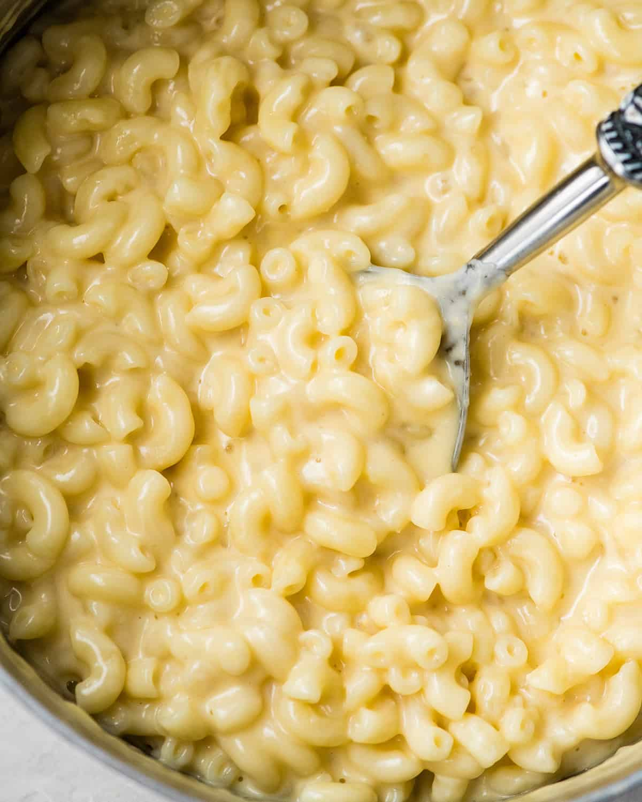

Homemade Mac and Cheese

Stovetop Mac And Cheese
This Mac and Cheese will blow your world away. You will never
have a box of Kraft again. The key to this mac and cheese is
Kraft Deluxe singles. There is a special emulsion salt in This
cheese that will give our Mac and Cheese its creaminess.
Ingredients
- Pasta (preferably elbows)
- Kraft Deluxe Singles
- Another cheese of your choice
- Frozen peas if you want to add a vegetable
Steps:
- Boil Water
- Cook Pasta>
- In a seperate pot make cheese sauce
- Watching the link of above will be your best resource.